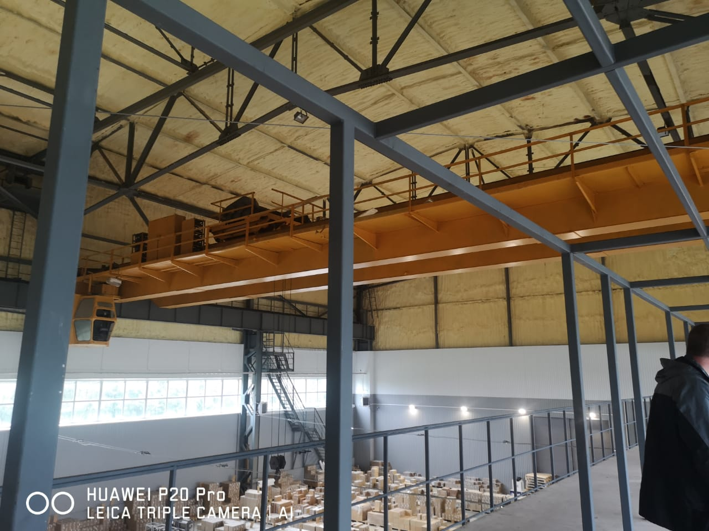
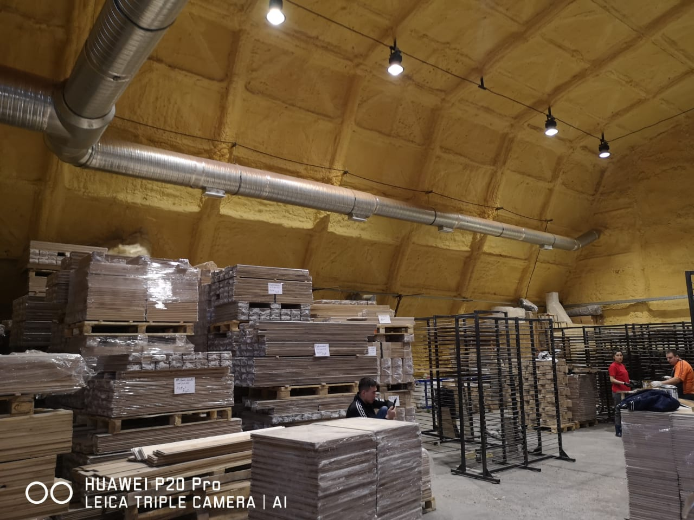
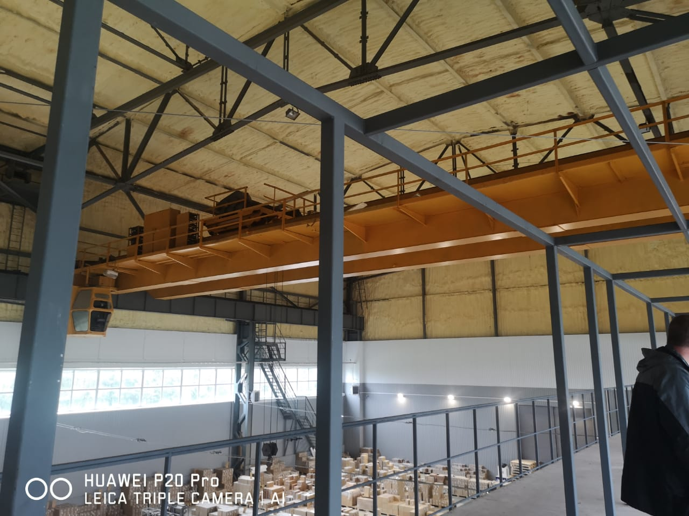
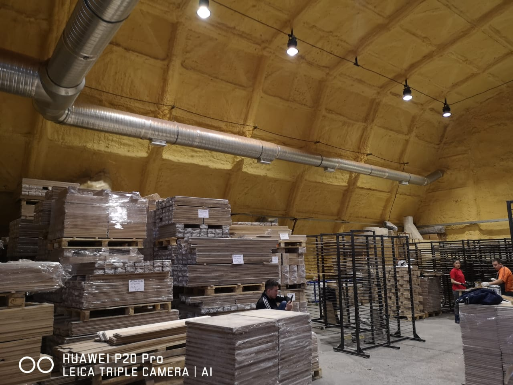

Пенополиуретан (ППУ) – это современный высокотехнологичный строительный материал. На сегодняшний день в сфере теплоизоляции существует два его вида, которые являются основными – это открытоячеистые пенополиуретаны (мягкие ППУ) и закрытоячеистые пенополиуретаны (жесткие ППУ).
Это утеплительный материал, который с виду напоминает монтажную пену и имеет самый низкий коэффициент теплопроводности из всех утеплительных. материалов.
Чтобы было понятно - 2,5 см ППУ по теплоизоляционным свойствам равны 65 см кирпичной кладки.
Напыление производится с помощью установки высокого давления.
Полученный ППУ имеет качественную структуру и плотность более 36 кг/м3.
Нанесенный таким образом ППУ застывает, образуя твердое покрытие с высокими тепло- и пароизоляционными свойствами.
На ППУ имеется экосертификат, материал не содержит фенолов и формальдегидов.
В нашем влажном климате ППУ не теряет своих свойств, остается стабильным до 30-50 лет.
ППУ не поддерживает, материал самозатухающий, имеет сертификат Г1- Г2.
За смену операторы утепляют от 200-700 метров кв.
Материал не нужно доставлять, хранить, не требует монтажа, наносится методом напыления.
Мягкий, или эластичный ППУ, состоит из множества открытых ячеек, которые плотно между собой взаимосвязаны. Каждый такой пузырек наполнен воздухом, что делает пенополиуретан сам по себе легким, эластичным и «дышащим».
Эластичные свойства пенополиуретана с открытыми ячейками выражены очень ярко и четко: он быстро и обильно вспенивается, и, таким образом, в объеме он увеличивается примерно в 120 раз. Мягкий ППУ имеет низкую плотность, которая колеблется в пределах 9-12 кг на 1 метр кубический.
Мягкий ППУ имеет меньший расход, и выполнение работ будет стоить немного дешевле.
Низкая плотность не мешает мягкому ППУ обеспечивать отличную теплоизоляцию. Коэффициент теплопроводности пенополиуретана с открытыми ячейками ограни- чивается показателем примерно 0,03-0,04 Вт/(м*К).
ППУ имеет коэффициент паропроницаемости идентичный древесине. Как правило, его используют для внутренней теплоизоляции деревянных и каркасных домов.
Мягкий ППУ обладает отличными звукоизоляционными свойствами на уровне 36-37 Дб. Для наружного утеплеия его лучше не использовать, поскольку не исключен прямой контакст с водой.


Закрытоячеистый (жесткий) пенополиуретан – прочный материал с огромным ко- личеством закрытых пузырьков-ячеек, которые изолированы друг от друга. По сравнению с жидкой консистенцией пена расширяется примерно в 40 раз.
Коэффициент теплопроводности закрытоячеистого ППУ составляет 0,019-0,03 Вт/ (м*К), что также обеспечивает этому материалу лидирующую позицию на совре- менном рынке утеплительных материалов.
Основными достоинствами и преимуществами данного вида пенополиуретана являются следующие: прочность; жесткость; твердая структура; легкость; низкая теплопроводность; низкая паропроницаемость.
Закрытоячеистая структура ППУ обеспечивает надежный «защитный барьер» против ненужных паров, влаги и воды, которые могут проникать внутрь. Именно закрытые ячейки препятствуют этому.
Жесткий пенополиуретан имеет низкий коэффициент паропроницаемости по сравнению с пенополиуретаном, у которого открытые ячейки. У пенополиуретонов с закрытыми ячейками плотность колеблется в рамках 25-300 кг/м3.

 


